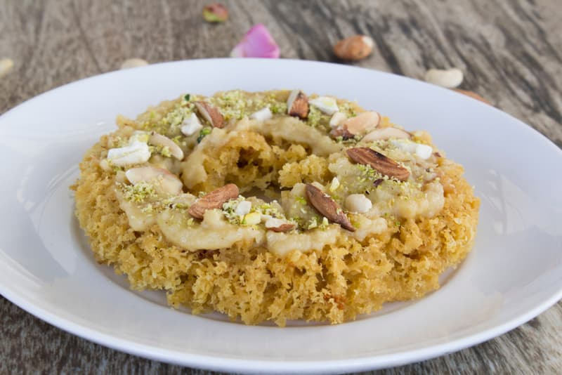
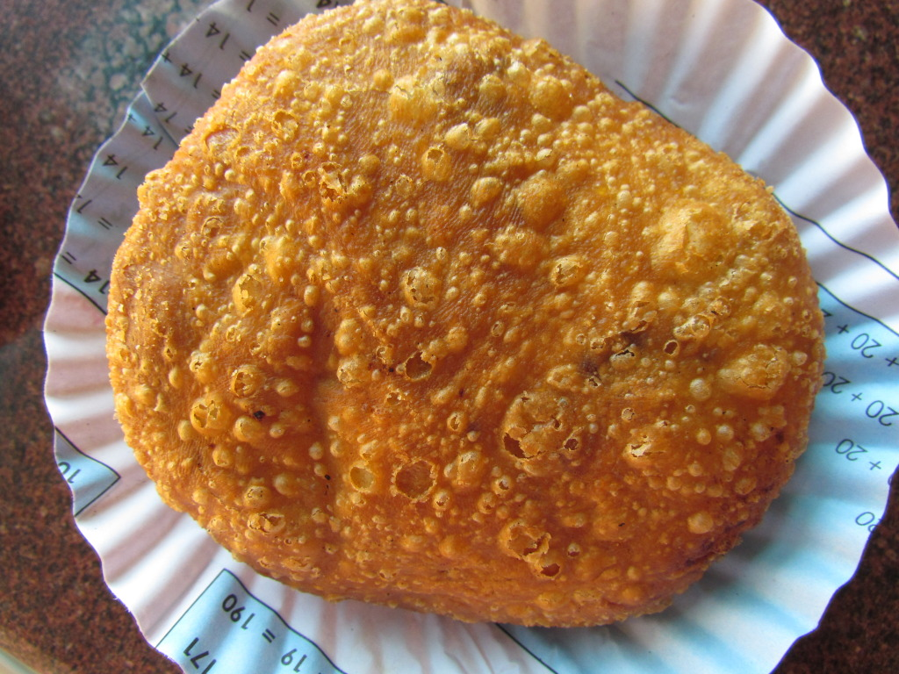

Kathi-Roll

The super-delicious taste will instantly make you fall in love with it. Your Jaipur visit will be incomplete if you haven’t tried the Kaathi rolls of Jaipur.
Last updated 3 mins ago
Rabdi-ghevar
This unique combination is one of the other specialties of Jaipur that is the favorite dish of many local people. The dish is so famous that no tourists leave Jaipur without tasting this delicious and amazingly tasty combination.
Last updated 3 mins ago
Daal Baati Choorma

The trip to Rajasthan is incomplete without having Dal-Bati-Churma. A fusion of three separate food, it is a complete supper in itself. It is most popular food of the pink city. Bati is a heated ball produced using flour which is then dipped in ghee and consumed with the dal. Churma is a flaky sweet dish created using flour that runs with the dish. No Rajasthani merry or wedding menu is finished without this famous food.
Last updated 3 mins ago
Pyaaz-Kachori
Pyaz ki kachori is first originated in Jodhpur and soon went popular all over in Rajasthan. This is an extremely well known morning breakfast of huge number of people groups of Jaipur. Steaming hot fiery Pyaaz ki Kachori, fit as a fiddle are available in most of the namkeen shops of the city. One must try this fresh flaky southern style kachoris. Pyaaz ki kachori is a namkeen served in Rajasthan with Chutney.
Last updated 3 mins ago
Gajak

Gajak of Jaipur has its taste and flavors which you can’t find at whatever other place in India. Gajak is a dry sweet, made of sesame seeds or “til” as they are known in Hindi. It’s “til” cooked in sugar syrup and set in slight layers, that can be put away for a considerable length of time.
Last updated 3 mins ago